June 8, 2021
Fuji Medical Instrument Co., Ltd. (Headquarters: Osaka City, Osaka Prefecture), a comprehensive manufacturer of beauty and health, is targeting men over the age of 20 with children. We have conducted a "Solution Method Investigation" and will announce the results. From the results of the survey, it was found that mental fatigue was strongly caused by the influence of Corona. We will introduce the details together with the results of the "11th Mother's Fatigue Situation and Resolving Method Survey". This survey has been conducted independently by our company every year since 2011, and this year's survey marks the 11th time.
(1) 84% of fathers answered that they "feel tired"
(2) 54% of fathers are physically and mentally tired
(3) The main cause of physical fatigue is "work", which is more than 50%, " There are many worries about "stiff neck and shoulders" and "backache"
(4) The main cause of mental fatigue is "work", which is less than 60%, and human relations in the workplace are also stressful
.
(6) Top 3 solutions are "sleep", "bath", "drink" (7) Fatigue
-relieving goods that you want as a present for Father's Day, No. 1 Popular for 11 consecutive years "massage chair"
「あなたは普段疲れを感じていますか？」「とても疲れを感じる」と「疲れを感じる」を合わせると84％となり、昨年調査に比べて2ポイントアップしていました。「とても疲れを感じる」を昨年調査と比較すると2ポイントアップしています。なお、第1回目の調査以来、疲れを感じていると回答したお父さんは毎回80％を超えています。
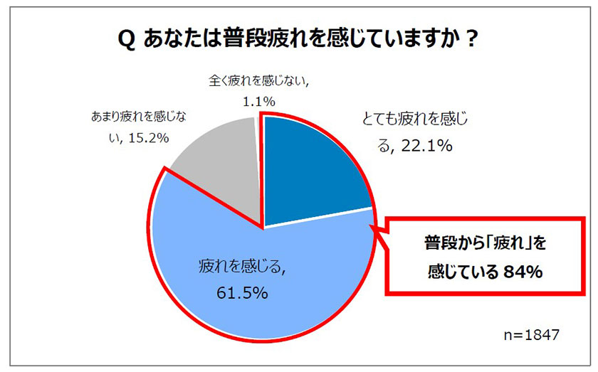
回答者の年代別と、子どもの年齢別に疲れの程度の割合を下記2つのグラフで示しています。
「とても疲れを感じる」の割合が多いグループに注目すると、年代別では、若い世代ほど疲れが強く20～30代では4割を超えています。子どもの年齢別では、0歳から中学生までは「とても疲れを感じる」が4割を超えていますが、高校生になると31％まで減り、子どもの年齢が上がるほど疲れの程度が緩くなっています。
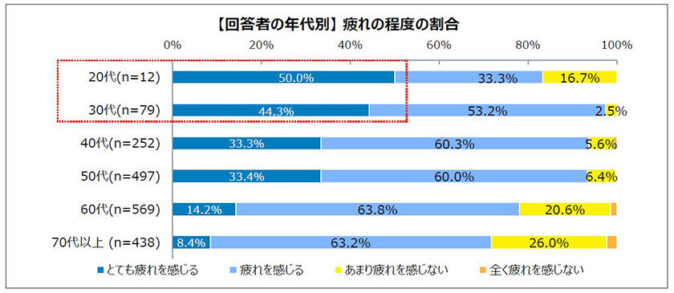
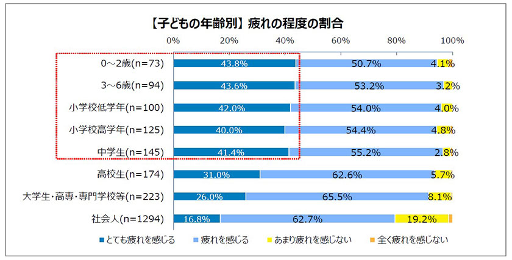
「その疲れは肉体的疲労ですか？精神的疲労ですか？」の質問に対し、「肉体的・精神的疲労どちらも」と回答した人が54.0％で、「肉体的疲労」のみが31.5％、「精神的疲労」のみが12.9％という結果になりました。
昨年の調査に比べて「肉体的・精神的疲労どちらも」は3ポイント減少、精神的疲労は2ポイント減少、肉体的疲労は5ポイント増えましたが、60代以上で「肉体的疲労」を選ぶ人が多い傾向です。
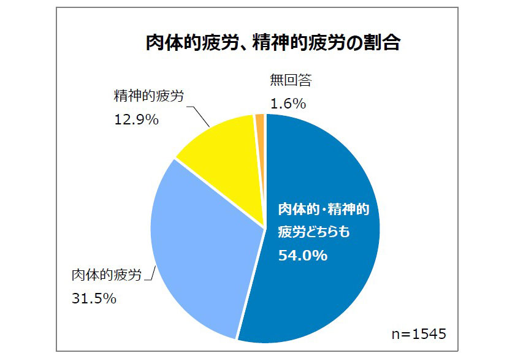
「肉体的疲労（「肉体的・精神的疲労どちらも」も含む）」を選択した回答者に「主な原因は何ですか？」と質問したところ、1位「仕事」（52.5％）、2位「加齢」（36.6％）、3位「家事」（2.9％）という結果になりました。「その他」の回答には、庭仕事や農作業という回答が多くみられました。
「体のどの部分にどのような疲れ・痛みを感じていますか？（複数選択可）」と質問したところ、1位「首や肩のコリ」（73.4％）、2位「腰痛」（64.6％）、3位「目の疲れ」（52.3％）となりました。「首や肩のコリ」は、第1回目の調査から毎回1位になっています。
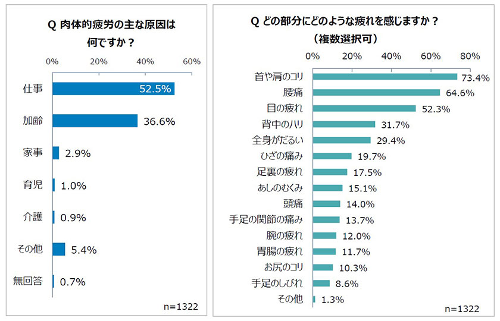
「精神的疲労（「肉体的・精神的疲労どちらも」も含む）」を選択した回答者に「主な原因は何ですか？」と質問した結果、1位「仕事」（56.2％）、2位「人間関係」（21.1％）、3位「加齢」（13.4％）となりました。「その他」には「新型コロナによる自粛」や「リモートワークによる孤独感」といった「新型コロナウイルス」に関わるコメントがありました。また、「人間関係」と回答した人に、「誰との人間関係に疲れていますか？（複数選択可）」の回答を求めたところ、多かった順に1位「同僚」、2位「上司」、3位「部下」という結果になりました。
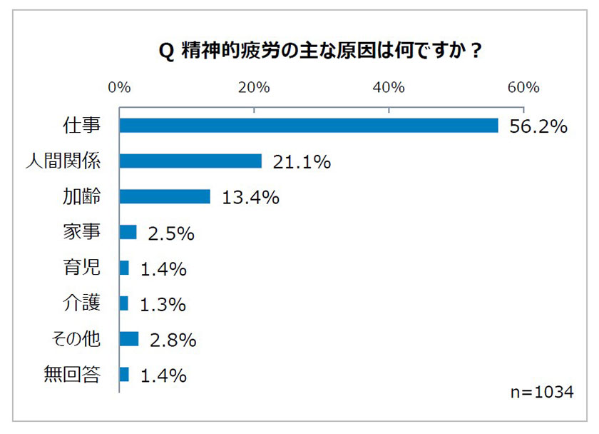
Q.誰との人間関係に疲れていますか？（複数選択可）
トップ５
1位：同僚 40.8％
2位：上司 40.4％
3位：部下 33.9％
4位：妻 25.2％
5位：近所の人 14.2％
n=218
「昨今の長引くコロナ禍で疲労感に変化はありますか？」の質問に対し、肉体的な疲労感については「とても強くなった」が4.9％、「強くなった」が32.2％、「変化を感じない」は47.8％でした。精神的な疲労感では「とても強くなった」が8.9％、「強くなった」が42.4％、「変化を感じない」は36.2％という結果でした。
肉体的な疲労も精神的な疲労でも「とても強くなった」という人は1割もいない結果でしたが、お母さんを対象とした今年の調査では、肉体的な疲労が「とても強くなった」人は10.4％、精神的な疲労が「とても強くなった」人は19.3％もいましたので、お母さんとお父さんにおいてコロナによる疲れ方の違いが見えてきました。
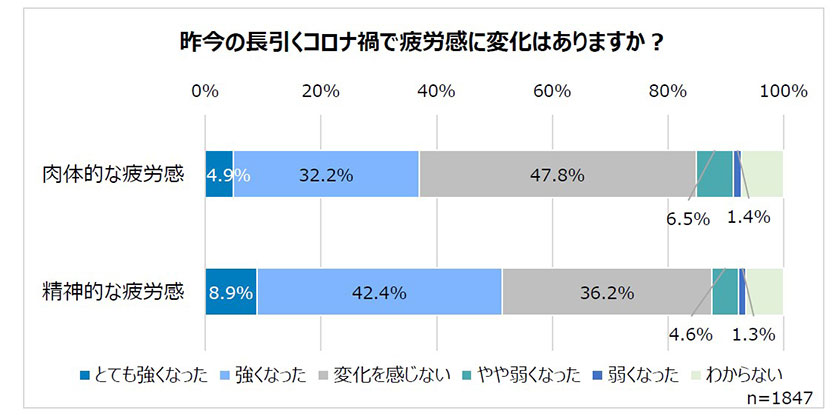
「あなたの疲労解消法は何ですか？（複数選択可）」の質問に対して、1位「睡眠をとる」（57.8％）、2位「入浴をする」（42.4％）、3位「お酒を飲む」（40.5％）となりました。トップ3の順位は昨年の調査と同じとなっています。「お酒を飲む」がトップ3に入っており、お酒好きのお父さんが多いことがわかります。
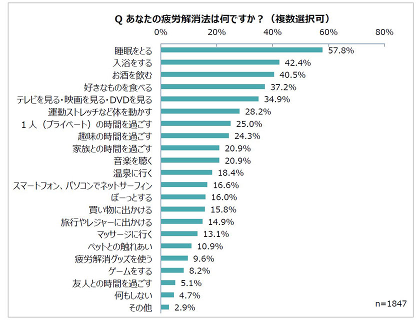
「父の日のプレゼントとして「疲労解消グッズ」をもらえるとしたら、どんなものが欲しいですか？（複数選択可）」の質問には、1位「マッサージチェア」（37.1％）、2位「安眠グッズ（枕・マットレスなど）」（33.8％）、3位「フットマッサージャー」（22.9％）という結果になりました。
「マッサージチェア」は、これまでの調査でも常に1位を獲得しています。また、「安眠グッズ」は前回の調査より30％を超えており、「睡眠をとる」ことで疲労解消をしているお父さんが多く、質の高い睡眠をとれる商品へのニーズが高まっているようです。
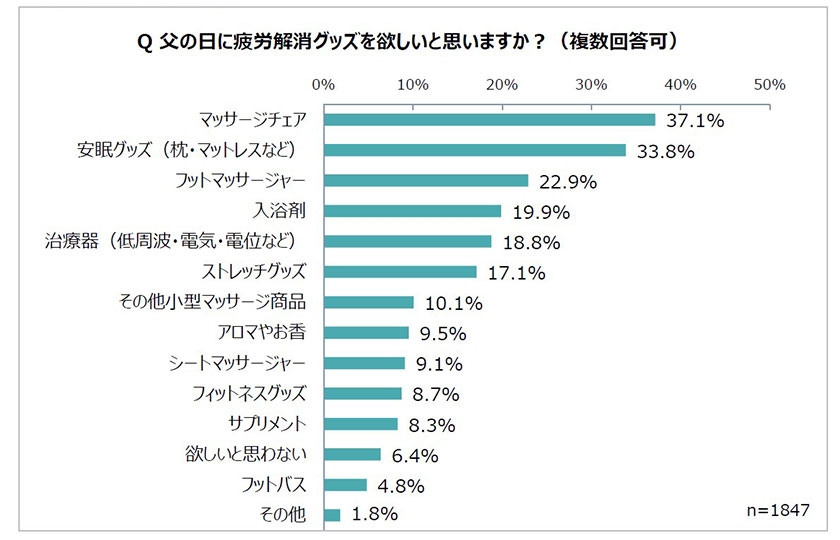
調査期間：2021年5月14日～2021年5月18日
調査対象者：子どもをもつ20歳以上の男性
有効回答者数：1,847名（20代 12名、30代 79名、40代 252名、50代 497名、60代 569名、70代以上 438名）
調査エリア：全国
調査方法：フジ医療器メルマガ会員にWeb 上でのアンケートを実施
※グラフのパーセンテージは四捨五入されているため合計値が100にならないものがございます。
お疲れのお父さんにはマッサージチェアの贈り物はいかがでしょうか。
広範囲にもみほぐす横回転式と、たたくようにほぐす縦回転式の2種類のもみ玉を採用した「マルチムーブメカ」が、背中からもも裏まで施療範囲約91cmにわたって滑らかにマッサージします。また、腰まわりや太もも裏を集中的にほぐすオリジナルのコースも搭載しています。コンパクト設計で圧迫感を与えず、お部屋にフィットするデザインです。
フジ医療器のオンラインショップでも販売中です。
医療機器認証番号:229AGBZX00107A01（家庭用電気マッサージ器・管理医療機器)、販売名：マッサージチェア L57
※当社調べ（2021年3月現在）
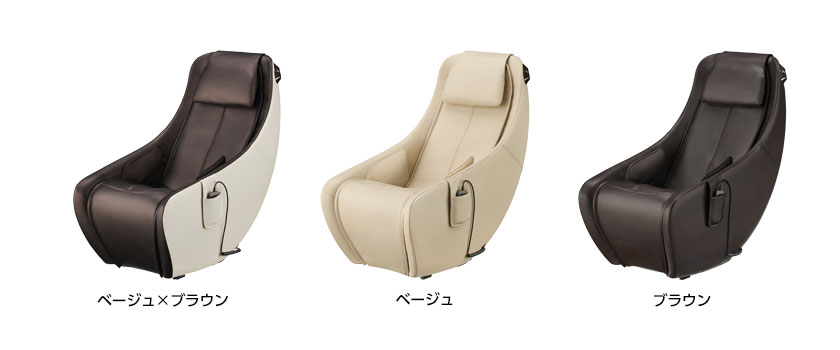
Equipped with abundant functions that make full use of the latest massage technology, it is possible to customize the massage to your liking. In the "app mode" that works with your smartphone, we analyze your mood, health condition, and fatigue level at that time and propose the optimal course. In addition, you can spend a relaxing time with the 30-minute automatic course "Night Healing" that provides effective relaxing stretching and massage before going to bed.
It is also on sale at the Fuji Medical Instrument online shop .
Medical device certification number: 302ABBZX00026000 (household electric massager / managed medical device), Brand name: Massage chair H57
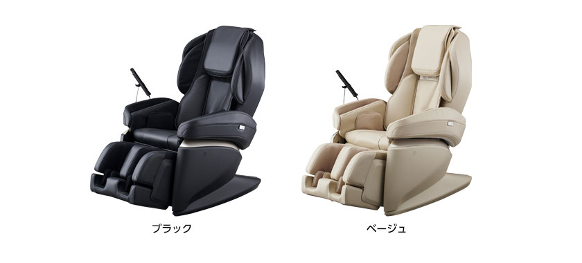
Fuji Medical Instruments will continue to provide market research results and useful information on "beauty and health" on a regular basis.
Customer Service Center Tel: 0120-027-612
Marketing Department: Ichii, Murata Tel: 06-4793-0611 (Representative)